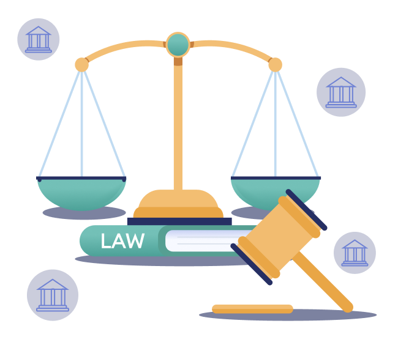

Web Design & Development
Legal and Ethical Issues Around Website Creation
Lary Renderos
Some Legal & Ethical Issues are:
- Privacy Policies Essential
- Data Security Laws
- Intellectual Property Issues
- Ownership and Licensing
- Domain Naming Issues
- Privacy & Data
- Accessibility
- User Consent and Transparency
- Environmental Impact
- Open Source and Collaboration
Privacy Policies Essential
Websites should have comprehensive privacy policies to ensure transparency regarding data collection and usage.
Data Security Laws
Total transparency regarding data collection and usage is crucial due to the significance and complexity of data handling on the web.
Intellectual Property Issues
Infringement on intellectual property (patent, trademark, copyright, trade secret, or trade dress) can lead to injunctions, hefty monetary judgments, and removal of the infringing content from your website.
Ownership and Licensing
Websites should have comprehensive privacy policies to ensure transparency regarding data collection and usage.
Domain Naming Issues
Typosquatting: Registering a domain name with a deliberate typo to redirect users to a different site for profit through paid advertising.
Pagejacking: Copying part of an existing website and hosting it on another domain to deceive users, often associated with phishing schemes.
Cybersquatting: Registering domain names that violate trademark rights with the intent to extort payment from the trademark owner.
Consequences can be...
- Severe sanctions.
- Punitive damages and orders to pay the property owner's attorney fees
- Financial losses and reputational damage
Prevention Strategies can be...
- Clear Strategy: Develop policies covering data, monitoring tools, and legal engagement.
- Active Monitoring: Regularly monitor and utilize UDRP for vigilance and legal readiness.
- Compliance Oversight: Establish a Regulatory Compliance Committee for policy creation and awareness.
- Legal Readiness: Engage counsel for legal action readiness and strategic planning.
- Transparent Communication: Ensure clarity in presenting procedures for effective engagement.
Privacy & Data
In the online world where data breaches and privacy worries are common, ethical web development means keeping user data safe. Developers need to use strong security measures, encrypt data properly, and handle user information carefully. They must never misuse or sell data without permission.
Accessibility
Websites and apps should be accessible to everyone, no matter their physical or cognitive abilities. Ethical developers make sure their creations work well with screen readers, keyboard navigation, and other tools that help people with disabilities use the internet. This makes the online world more inclusive for everyone.
User Consent and Transparency
Transparency in web development means being upfront about data collection, storage, and use. Ethical developers obtain clear consent and provide easily understandable privacy policies to foster trust with users.
Environmental Impact
The digital world has an impact on the environment. Big data centers, energy use, and electronic waste harm the planet. Ethical web development involves thinking about these environmental effects and using practices that are kinder to the Earth.
Consequences can be...
- Ruined Trust/Reputation
- Legal compliance
- Social impact
- Environmental Responsibility